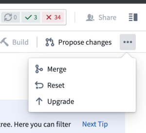

The following are some frequently asked questions about Code Repositories.
For general information, view the Code Repositories documentation.
Yes. You can publish the latest commit of a Python package by modifying your package's root build.gradle file to publish the branch. For example, to publish the latest commit on the master branch, modify the build.gradle file as follows:
condaLibraryPublish.onlyIf { versionDetails().branchName == "master" }
If these transforms were built into a dataset, you can use the Compare feature of the resulting Dataset Preview to view the code at that time. From there, you can copy-paste the relevant transforms. Alternatively, you can navigate to Branches in your code repository, open the specific branch, and review the full history of changes there.
There is no built-in capability to copy code repositories in the platform. You can however, clone the repository to your machine and then push that code to a new code repository. If you do this, remember to add all the inputs as references to the new project. Learn how to clone a repository.
You can confirm your code repository is up-to-date by selecting ... in the top-right corner of the code repository and confirming whether Upgrade appears as an option. If the Upgrade option is not available, then the repository is already up-to-date.

This is not supported. Continuous integration (CI) checks define the set of inputs and outputs whenever a new commit is added in the code repository.
Your Code Preview succeeds but your build fails. Code Previews run on a subset of data, which likely means there are data values not in the subset breaking your code when the full build runs.
To troubleshoot, perform the following steps:
Sometimes, porting code from a code workbook to a code repository will not work without modifying the code to run in a code repository.
To troubleshoot, perform the following steps:
@transform vs. @transform_df?Review our FAQ on builds and checks errors for more detail.
Sometimes, a repository that has been working starts encountering a problem where repository checks begin failing with an error indicating that Conda packages could not be obtained. This may be a PackageNotFoundError, or a MD5MismatchError due to a Conda cache getting corrupted.
To troubleshoot, perform the following steps:
conda-versions.run.linux-64.lock in your Python subproject, delete it, and press Commit.